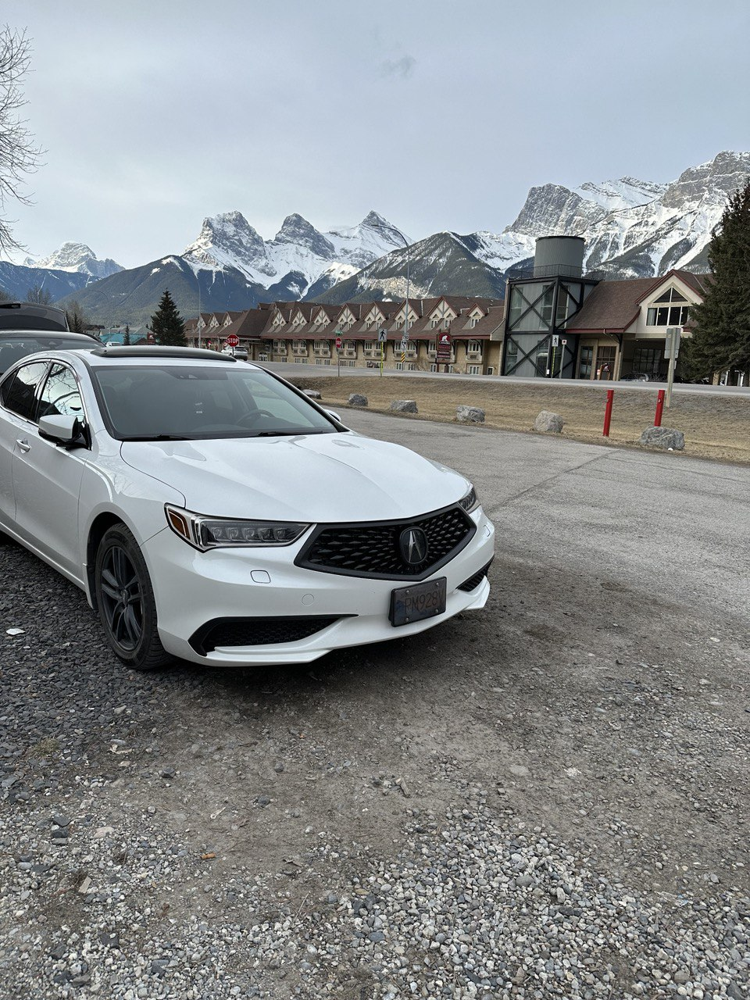
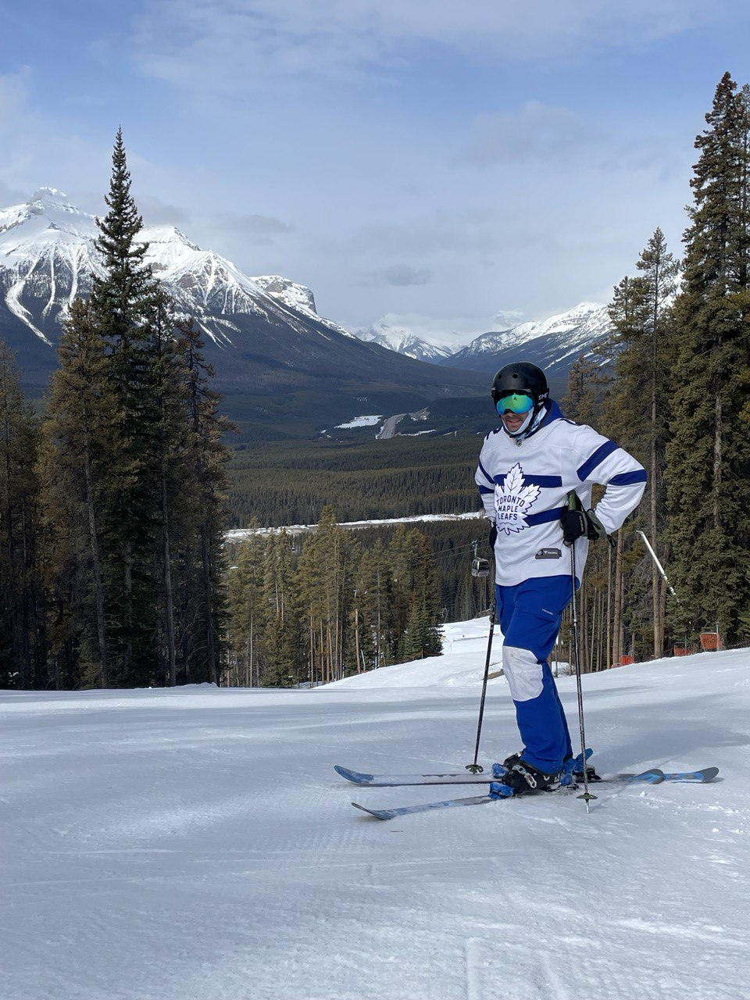

Welcome to my TED talk!
Born and raised in Greater Toronto Area (Durham Region), I have always been a curious person. As a child, I always asked my parents ambitious questions,
trying to learn everything I possibly could. I'd often ask my parents absurd questions for my age as a child like "How far is the moon if we walked there?"
or "How were mountains made?"
Originally a shy child, I always did well in primary grades of school but my only motive was go home for extracurriculars.
Driven by social interactions with friends, I was also introduced to video games at a young age when I got my first console.
The PlayStation 1 put to sleep my Gameboy Colour, as I was now introduced to a large assortment of games.

Belonging to the Ajax Minor Hockey Assosciation, and the Ajax Azzurri soccer club I always tried to find oppourtunities to volunteer.
Within the AMHA, I volunteered throughout my teenage years to teach timbits (ages 4-5) the principals of hockey which taught me how to work with children.
Once I turned 16, I was employed by the Ajax Azzurri soccer club to referee typically being under 12 boys or girls soccer matches.
My casual employment experience begun with my employment at McDonalds Ajax, where I climbed all the way through the ranks from a team member
to a swing manager in 4 years. McDonalds taught me a lot about customer experience, managing a fast-paced environment, and leadership.
Throughout high school, I was attempting to balance hockey and 25+ hours a week at McDonalds all while trying to keep up a social life.
As I grew up playing competitive hockey, I bounced around the tiers of AA to A. Once I got to grade 11, I decided I don't have the time to commit
to hockey, as I wanted to make money and focus on my education. Luckily for me while I was in AE, these were the two years we won the Ontario Minor Hockey Association
Championship.

Meanwhile my childhood dreams were melting away as I concluded my last year of minor league hockey, I had to plan the next step in my life.
It's probably one of the hardest things to answer as a Grade 11 or 12, "What are you doing after high school?". Being an avid gamer, and a
spending more than a year of my life playing Runescape I assumed it'd have something to do with computers. Throughout my high school education,
I took a course called "Computer Technology Engineering" where I excelled. Furthermore, I knew I was onto something special when an online course
for Grade 12 on computer programming started with 65 students and I was one of the only three who didn't drop the class. My true passion for tech
came from a project in Grade 12, where I created a Python simulation game of Risk using a Raspberry PI, GPIO buttons, and LEDs. Based on my
passion for J.R.R Tolkien's works on the Lord of the Rings and other novels, I decided to theme it using the Lands of Arda.
To conclude my path in high school, I was awarded the computer studies excellence award at graduation and graduated with a suitable average grade
to ensure my acceptance into various Universities. Following some scholarship offers, and acceptances from multiple Universities for computer science
being a very family focused person I decided to go to a local University. Now begins the chapter of my time at the University of Ontario Institute of
Technology.
I can tell many stories about my time from 2015 - 2022 at the University of Ontario Institute of Technology (also known as Ontario Tech University),
but a lot of the fun parts can be found elsewhere on my website. Throughout my education, I always took initiative to take advantage of every
oppourtunity put infront of me. By the time I was in my third year, I found myself both a teaching assistant and research assistant while balancing
a full course load so it goes without saying I can handle a busy schedule. Once I began research in University, I became interested in doing a Bachelor's
Honours thesis and pursuing a Master of Science degree. At this point in my education, I found a true passion for teaching but
oppourtunities for University instruction without a PhD is very far and few. My teaching dreams came true when in my second year into my Masters degree,
I was given the oppourtunity to be a sessional instructor! Here's a headshot of my first class from my parent's basement during COVID-19!
Around this time, I made a big first step into adulthood and bought myself a brand new 2021 Honda Civic Sport named Red Rebel (inspired by Escape from Tarkov).
One of my weird obsessions begun, keeping my car as clean as humanly possible all the time. Oh damn, was I ever a stereotypical "deck out a civic" guy.
Living on my quote of "Your greatest adventure is what lies ahead - J.R.R Tolien", I have always had a passion for adventure. My take on adventure
is going camping and being one with nature. Here's some shots on a few adventures from 2020-2022.
In June of 2022, the life of this guy from the GTA changed forever. I was offered a position at TerraSense Analytics in Kelowna, British Columbia.
One of the terms of employment was that I was required to relocate. Before I left Ontario, with my new fancy job I needed to fix one of my pain points.
I didn't have enough horsepower in my Honda Civic... So while getting an oil change at the Honda dealership, I ended up having quite the expensive oil
change. I traded in my 2021 Honda Civic for a 2018 Acura TLX. The first song that shuffle played as I plugged in Apple Carplay was Plain Jane by A$AP Ferg.
Thus, I introduce you to Jane. Thanks for 10,000km Red Rebel.
Now begins the story of British Columbia.
I bought the furniture and housing essentials for a whole house, then I packed it all up. Next thing you know, I was leaving the whole world I knew
my entire life to move to a new province away from family and life long friends. Here's the pod on it's way across Canada!
As any new citizen of the province of British Columbia, I quickly found my love for the mountains. Here's a few shots of Jane while I explored in
my first year of living in Kelowna. Take note of how the vehicle evolves overtime to become more of a "British Columbia Car" and before you comment,
yes I really don't like chrome on cars.

Is it really an adventure if you don't take a picture of your car...?
Being a Kelowna resident, I obviously got a Big White season pass. Here is my 'swag' throughout my first
year of skiing. Have to represent the home town.

This is it for now. But always remember...
"Your greatest adventure is what lies ahead - J.R.R Tolkien"